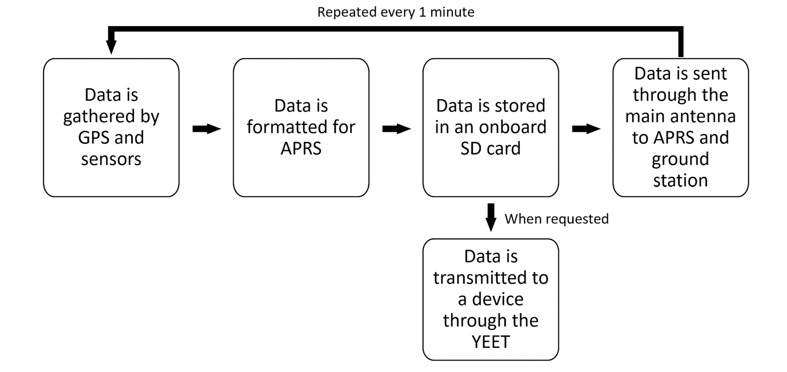
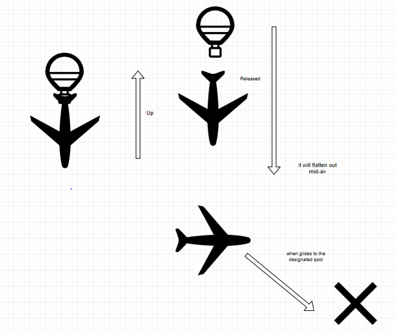

Level 0 Requirements
- Project Lykoi shall be a glider that reaches 100,000 feet (30.5 km) of altitude.
- The payload shall return by glider to a location specified by the team.
- The Project shall have cameras that will record/take images of the flight.
- The glider shall be designed so that data can be recovered from the payload on landing.
Strawman Mission Architecture
Communications
- Communicate with Payload
- Use a primary GPS tracking chip & antenna compatible with a microprocessor to track the payload
- Use microprocessor to format data into APRS
- Transmit the APRS data to nearby towers
- Use high-speed data-link from payload to collect untransmitted data to mobile station
- Ground Station
- Use a computer with APRS decoding software to decode the APRS data
- Construct a directional antenna that will be used to receive the data transmitted
- Use secondary GPS tracker to locate the HAB after it has landed
- Allows us to more accurately determine the location of the payload once it approaches touchdown
- Ye Effortless Extraction Transmitter (YEET) System
- Separate system to allow rapid transfer of all data stored on the SD card in the event that the glider cannot be recovered
Software & Payload
- Cameras
- GoPro- take pictures/videos, store via SD card (256 GB)
- Flight controller
- Try to build one (Raspberry Pi). If no progress is made by a deadline, purchase one
- Raspberry Pi
- Determine when and where to drop glider, possible flight controller
- Servos
- Control the control surfaces, release system and possible parachute (if needed)
- Power Supply
- Power all electronic components
- GPS/Gyro
- Seperate from Comms, communicate with Raspberry Pi
- Gyro will communicate orientation of glider with Raspberry Pi
Flight Systems
- Launch Location Ideas
- A farm in Sunman, IN (about 50 min away)
- Recovery Location Ideas
- Within a 15 mi radius of the launch sight
- Mission Altitude
- ≈100,000 ft max altitude about 95,000ft when glider is released on the way up
- Parachute will deploy after 100,000 ft if glider controls are not operational
- Mission Duration
- Total Time ≈ 5-7 hours
- 1 hour of prep and takeoff
- 2 - 4 hours flight time
- 2 hours recovery
Data Plan Flow Diagram
Operational Concept Diagram
Level 1 Requirements
Communications
Our Misiion Shall:
- Transmit data over APRS every 1 minute and be received by retrieved on APRS.fi
- Transmit data every 1 minute and be received directly by a ground station.
- Store all information on an 32 GB SD card on the payload.
- Locate the payload once it has landed using a secondary GPS tracking system.
- Include a high frequency Ye Effortless Extraction Transmitter (YEET) to collect data from the glider in the event that it cannot be retrieved after landing.
Software & Payload
Our Misiion Shall:
- Construct and program a flight controller with a Raspberry Pi 4 to gather data about orientation and position of the glider using a gyroscope and GPS.
- Use the position and orientation data gathered to steer the glider via servo motors to the position specified by the group before flight.
- Video record the entire duration of the flight using a GoPro at 1080p resolution.
- Provide enough power to the onboard electronic components for amount of hours planned for the mission +3hrs (9 hrs total) via a battery pack.
Flight Systems
Our Misiion Shall:
- Reach an altitude of around 100,000 ft by filling a balloon with X ft^3 of helium; where X is determined by balloon size, weather conditions, and payload size.
- Measure the positive lift using a spring scale
- Release a glider at a designated altitude with hooks
- Point one camera forwards (at the glider) and the other camera will down
- Salvage the internal data and continue monitoring the location by absorbing outward shocks
Schedule
MCR: 10/3/2019
TDR: 11/18/2019
Launch: February/March of 2020
Gantt Chart